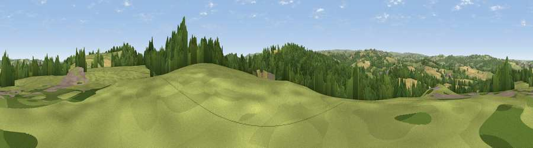

Viewpoint near Silkstone
#25874 in England · top 46% of its area beats it · near SilkstoneThe view, rendered

A 360° render of this exact spot computed from the terrain model, tree cover and land cover — summer colours, afternoon light, calibrated against photographs of famous viewpoints. Real trees, hedges and buildings will differ in detail.
The panorama
Grey silhouette: terrain skyline in each direction (720 bearings, Earth curvature and refraction included). Dashed green: skyline with trees (+15 m) and buildings (+8 m) as obstacles. Blue strip: how far the ground is visible on each bearing.
Where the view opens
Wedge length = distance to the farthest visible ground on that bearing (vegetation-aware). Rings at 10, 25 and 50 km.
What fills the view
41% woodland · 31% grassland · 24% cropland · 5% built-up
Angular shares of the visible panorama (visual magnitude), not map area. Landscape diversity 0.53 (0–1 Shannon).
Key numbers
More beautiful places nearby
The staircase of upgrades: each row has a higher view potential than everything closer. Driving times are estimates from straight-line distance, calibrated against real road routing — check an actual route before setting out.
| Place | Direction | Drive | Score |
|---|---|---|---|
| Viewpoint near Silkstone Common | SSW · 1 km | ~3 min | 57.9 |
| Dodworth Hill | E · 1 km | ~3 min | 61.7 |
| Viewpoint near Hood Green | SSE · 3 km | ~7 min | 64.3 |
| Viewpoint near Hoylandswaine | WSW · 4 km | ~10 min | 72.7 |
| Viewpoint near Green Moor | SSW · 7 km | ~15 min | 73.1 |
| Viewpoint near Wharncliffe Side | S · 9 km | ~18 min | 75.0 |
| Viewpoint near Wharncliffe Side | S · 10 km | ~19 min | 75.2 |
| Viewpoint near Greenfield | W · 30 km | ~47 min | 76.0 |
53.54864, -1.54379 · source: screening · position refined by local search. Computed location — check access rights before visiting.